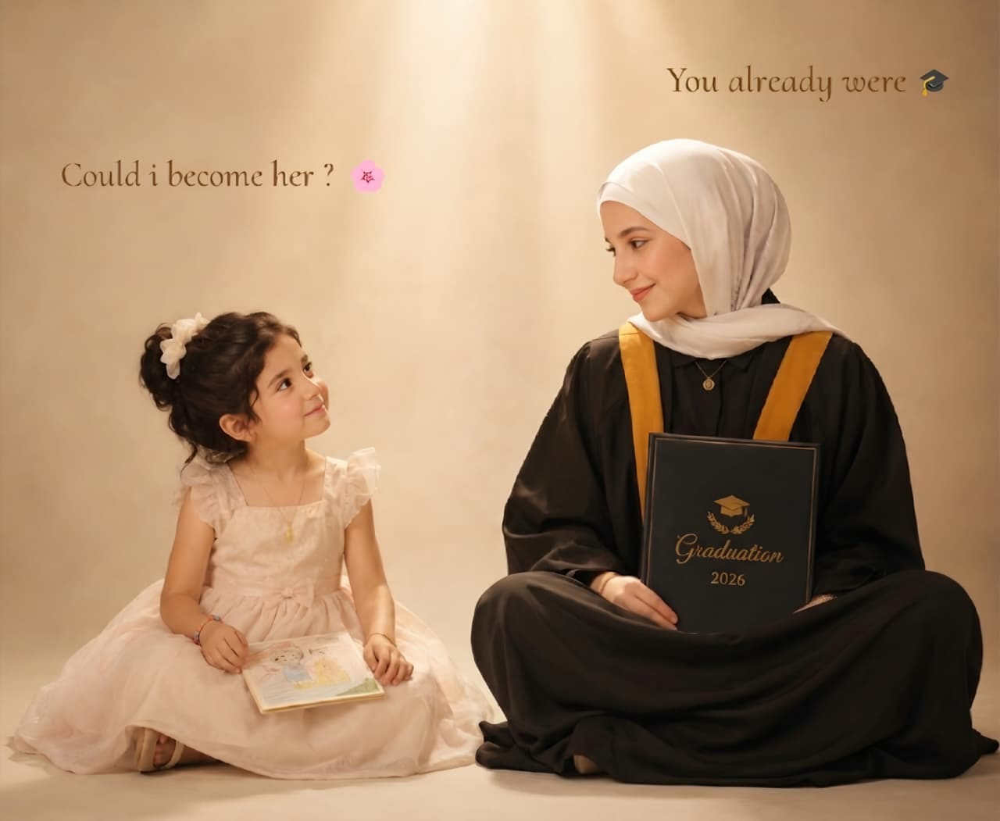

From 2003 until 2026, always proud. 👏🏻 بعرف إن المفاجأة هاي السنة ما بتليق فيكي أبدًا، ومؤنستي بتستاهل أكثر بكتير... ولكن إنتِ أدرى بالظروف الحالية. عيد ميلاد خالي من صورك ❤️ بس معلش... سنة غريبة ومرحلة أغرب. ومهما صار، ما لازم تنسي تحتفلي بحالك. ولا تنسي تكوني فخورة بحالك. لأنك بتتعبي. وبتسعي. وبتتعلمي. وبتتغيري للأحسن سنة بعد سنة. وكل خطوة وصلتيها كانت بتستحق التعب اللي وراها. والباقي على الله. 🤍 وما رح أحكي عن وضعنا ❤️ لأن بالنسبة إلي هاد موضوع منتهي ومجزوم أمره. وواثق فيه مثل ما أنا واثق بالشمس لما تطلع كل صباح. بدي بس أوريكي مقطع صغير من عيد ميلادك الـ19... يا سلاف.... يا روحي يا عيوني يا غزالي يا ملاكي يا قلبي يا جنتي يا نعمتي يا اميرتي يا قصيرتي... انتي البنت الوحيده اللي قادرة على إسعادي والله والله... انتي البنت الوحيده الي انا اذا ما قضيت حياتي معها ما بدي حياتي كلها لانو ما الها معنى حياتي بتصير.... انتي الوحيدة الي قادرة على تغيير مزاجي..... ولك انا بعشقك لدرجة ما حدا بقدر بوصفها ابدا ولك انا نفسي تفوتي عقلبي وتشوفي كمية الحب والعشق الي مخبيها الك.... انا الي مضايقني غيرتي عليكي بس مس قادر ابطلها يا روحي مش قادر يمكن لانك جنتي وانا مش شايف غيرك والله والله والله يا سلاف يا روحي مستحيل اتغير عليكي مستحيل اتركك مستحيل احب حدا غيرك والله بعشقك عشق يا الللللللللللله يا الللللللللللللللللللللله لو تعرفي قديش بحبك يا سلاف شفتي؟ ❤️ من زمان طويل وأنا ما كنت شايف غيرك. ومن زمان طويل وإنتِ حنونة. اذا من زمان ونظرتي هيك ... كيف هلأ ؟ من طول عمرك حنونة حنونة بطريقة ما بتتغير. خديلك نظرة على الصورة... شوفي سُلافة الصغيرة وهي عم تتطلع على سُلافة اليوم. كأنها متعجبة... هل فعلًا أنا رح أكبر وأصير هيك؟ هل فعلًا رح أوصل لهون؟ هل فعلًا رح أقدر؟ ولو سألتِ نسخة الروضة... كان يمكن ما صدقت. ولو سألتِ نسخة الجامعة بأول يوم... السنفورة الخايفة اللي كانت داخلة على عالم جديد... يمكن برضه ما صدقت. بس شوفي كيف مرت الأيام... الروضة. المدرسة. الجامعة. والشغل. سنين كاملة من المواقف والتجارب والناس. بس بتعرفي شو الشي الوحيد اللي ظل ثابت بكل هالرحلة؟ نيتك. 🤍 نيتك الصافية يا حنونتي. أنا والله بتعلم منها. بتعلم كيف الواحد يضل قلبه نظيف مهما شاف بالدنيا. وكيف يضل يعطي من قلبه. وكيف يضل يمشي مطمن لأن نيته صافية. وصدقيني... نيتك هاي كانت سبب بكتير أشياء حلوة بحياتك. وكانت سبب بمحبة الناس إلك. وكانت سبب إن ربنا يفتحلك أبواب ما كنتِ تتوقعيها. ولسا... لسا رح تاخدك لأماكن أبعد بكتير مما بتتخيلي. ولسا رح تصنعي نسخة من نفسك ما حلمتي فيها. وأنا مؤمن بهالحكي من كل قلبي. 🤍 دخيل الله يا عيون... كبرت الفراشة. كبرت بالعمر بس والله بالعمر فقط. أما روحها؟ أما ضحكتها؟ أما تعابيرها؟ لسا فيهم نفس الطفلة اللي بعرفها. ولسا مستحيل يطلعوا من ملامحها. وأنا واحد من أكثر الناس اللي بعرفك. وحافظ تفاصيلك. وعارف كيف بتفكري. وعارف قديش قلبك أكبر من الكلام اللي بينحكى عنه. ❤️ استمري يا نور عيوني. استمري. وأنا بوعدك إني أضل أول واحد بعد أهلك يفرحلك. وأزقفلك. وأدعمك. وأحطك بعيوني. لأنك بالنسبة إلي مش شخص عادي. إنتِ جزء من الطريقة اللي بشوف فيها الدنيا كلها. 🤍 علمتيني كيف أعيش. حتى بالأيام اللي ما كنتِ فيها قريبة. علمتيني كيف أعيش. لأن الحياة هاي... مهما كان فيها أشياء حلوة... ما عمرها كانت كاملة بدونك. 🤍 كل سنة وإنتِ ضو قلبي. وكل سنة وإنتِ من أجمل النعم اللي عرفتها بحياتي. ولو شفتيني يوم شاطر. أو ناجح. أو طموح. لا تفكري إني عم أشتغل عشاني. أنا أصلًا ما بدي من الدنيا كثير. كل اللي بديه... إني أشوفك سعيدة. هاي كانت وما زالت أكبر أمنية عندي. 🤍 اللهم صل وسلم على سيدنا محمد. وبالمناسبة... عمرك سمعتي عن ناس بكبروا بالعمر بس شكلهم ما بيتغير؟ 😄 لأني والله كل ما أشوفك... بحس إني لسا شايف نفس البنت الفرفوشة. نفس الروح. نفس البراءة. نفس اللمعة. وكأن السنوات مرت حواليكي... مو عليكي. سنين مضت وعدت... وذكريات أكثر مما بنقدر نعد. وفي كلام كثير ممكن ينحكى. كثير جدًا. بس اليوم عيد ميلادك. اليوم بدي أحكي عنك إنتِ. عن البنت اللي كل مرحلة بحياتها كانت أجمل من اللي قبلها. والبنت اللي فاجأتنا كلنا مرة بعد مرة. ومتل ما صدمتينا بالشهادات والنجاحات 🤍 أنا متأكد إنك لسا رح تبهرينا أكثر. ولسا رح يجي يوم تشوفي فيه أحلامك وهي عم تتحقق قدام عيونك. وأنا؟ رح أكون أول واحد يصفق. وأول واحد يفرح. وأول واحد يحكي: "أنا كنت عارف." 🤍 لأن شغلتي بالحياة... إني أشوف هالابتسامة على وجهك. بس هيك. بس أشوفك مبسوطة. هاي لحالها بتكفيني. 🤍 كل عام وإنتِ أحلى مخلل بالعالم. 💚 وكل عام وإنتِ أطيب حبة نوتيلا. 🤎 وكل عام وإنتِ أحلى سكر بني بالدنيا كلها. 🤎 أما بالنسبة لعمرك... فمثل ما شفتي بالفيديو 😄 هاد العمر بالنسبة إلي مجرد رقم. لأنك من جوا... لسا نفس الروح الحلوة اللي عرفتها من زمان. حبيبة قلبي. 🤎 بتمنالك سنة مليانة نجاح. وراحة. وطمأنينة. وأحلام حلوة. ولحظات تستاهليها كلها. وبوعدك... السنة الجاية نحتفل فيها سوا. 🤎